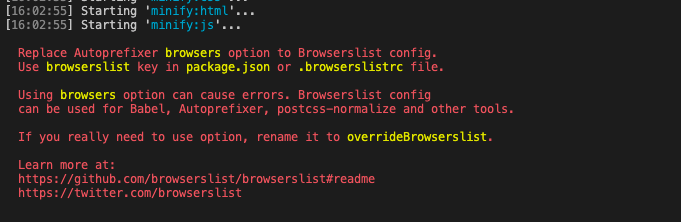
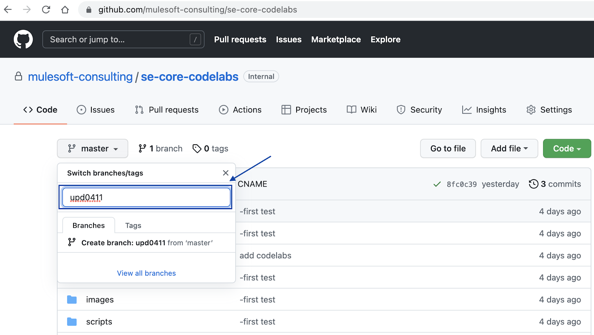
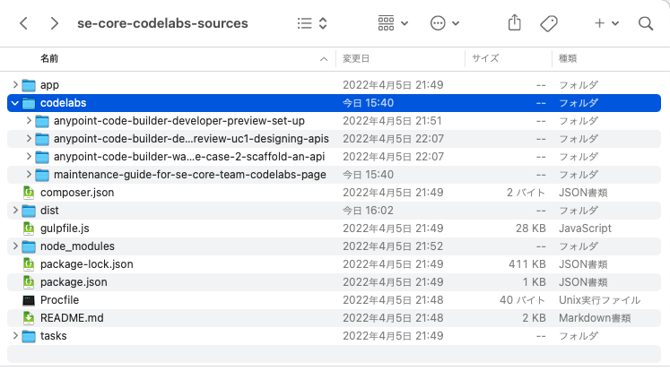
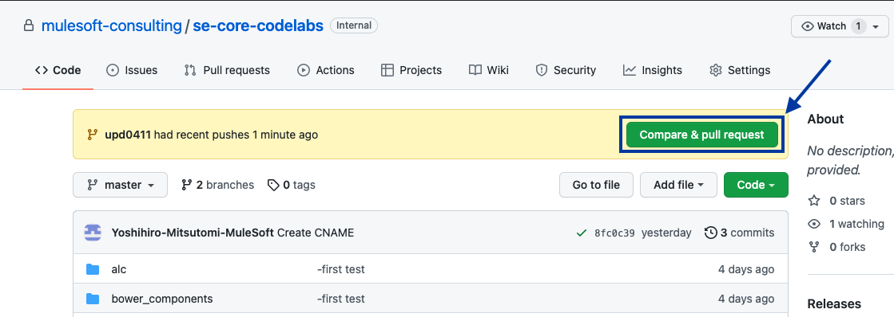
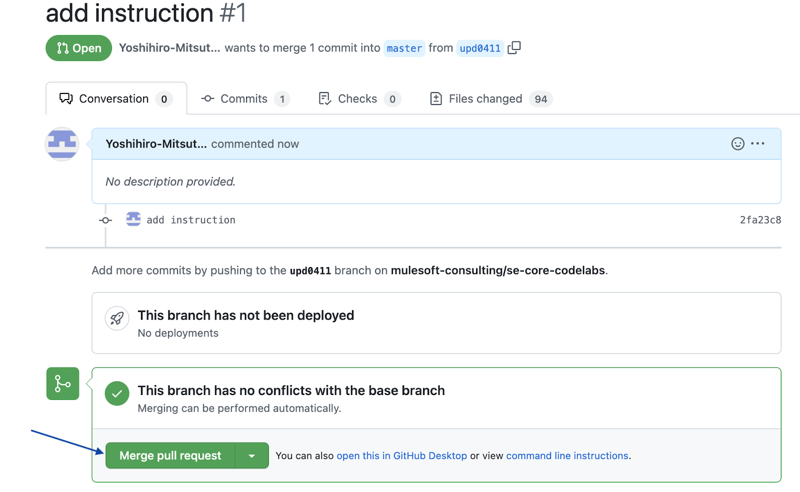
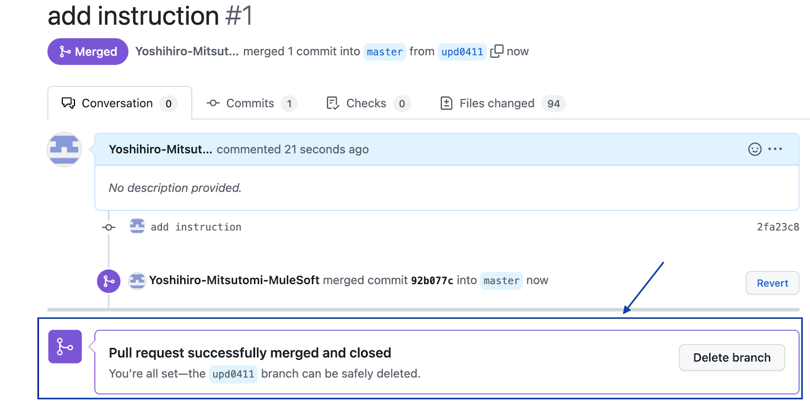
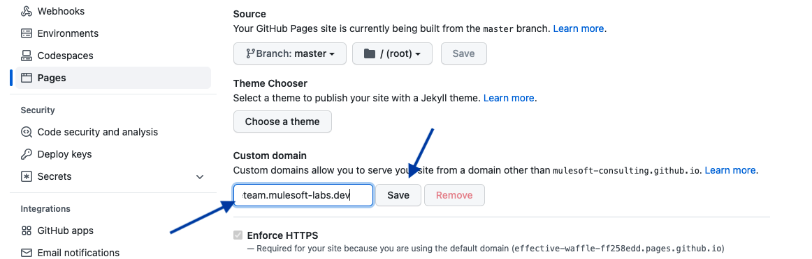
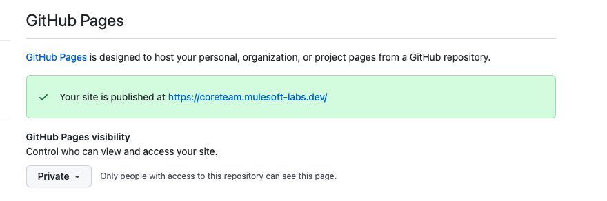
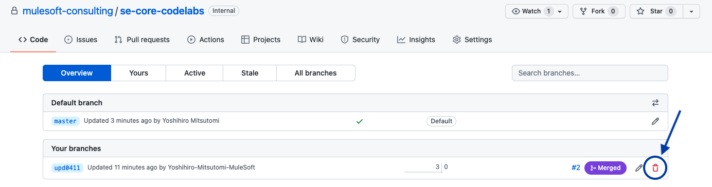

Overview
This is a guide to walk you through how to add or update CodeLabs contents onto CodeLabs page maintained by SE Core Specialist team.
What you'll learn
- How to generate CodeLabs contents source file in Google Doc format
- How to reflect the contents on to CodeLabs page
What you'll need
- Github account which is accessible to mulesoft-consulting organization
- Google Account associated with MuleSoft/Salesforce domain - all MuleSoft employees should have
- Preview codelab Google Chrome plug-in -
get the plugin - Google Codelab CLI – follow this guide
go to Codelabs CLI installation
In this section, you'll create a CodeLab Source File in Google Doc format. You can skip this section if you are going to update the contents and you have an access to CodeLab Source File already.
Add MuleSoft Codelabs Slack app
If you don't have MuleSoft Codelabs Slack app, add it on your slack. You can add Slack app by hitting plus button next to Apps on your slack window.
Search "MuleSoft Codelabs" and choose it to add the app.
You will see "Mulesoft Codelabs" in your Apps directory if it is successfully installed.
Create Codelab source file
Hit /clb create at MuleSoft Codelabs message window.
Then a form will be popped up. You fill in all fields and hit submit button.
If everything is fine, you get a notification with the link to the generated Codelab template Google doc file. If you miss the message, you can list your files by /clb list and hit Edit.
Sample image:
Edit CodeLab Source file you generated at previous step. Its format guide is available in the file you generated. On top of this, a template with a full set of format example is given by Google here:
Image:
When writing up your code lab, you'll likely want to preview it before you deploy to the test environment.
Install Google Chrome codelab preview plugin
If you haven't installed it, you can install it from here.
Install Google Chrome codelab preview plugin
If you haven't installed it, you can install it from here.
Preview the doc in HTML format
Click the shortcut to invoke the preview while Google Doc is opening.
Image:

Our CodeLab site resources are managed on following GitHub repositories:
- Sources: https://github.com/mulesoft-consulting/se-core-codelabs-sources
- WebSites: https://github.com/mulesoft-consulting/se-core-codelabs
On this section, we will transform the google doc file you maintained in the previous section into HTML sources. Then update the GitHub source repository.
Open up terminal and go to your work directory
Clone the source repository
$ git clone https://github.com/mulesoft-consulting/se-core-codelabs-sources.gitGenerate HTML sources from Google doc file
$ cd codelabs
$ claat export <Google Doc ID>Google Doc ID can be grabbed from URL:
If it is successfully generated, OK is returned.
Sample output:
Test the site
Run gulp serve , then site instance is invoked at http://localhost:8000
$ gulp serve
[15:47:00] Working directory changed to ~/codelab/se-core-team-codelabs-sources/se-core-codelabs-sources
[15:47:02] Using gulpfile ~/codelab/se-core-team-codelabs-sources/se-core-codelabs-sources/gulpfile.js
[15:47:02] Starting 'serve'...
[15:47:02] Starting 'build'...
[15:47:02] Starting 'clean'...
[15:47:02] Starting 'clean:build'...
[15:47:02] Starting 'clean:dist'...
[15:47:02] Finished 'clean:build' after 2.97 ms
[15:47:02] Finished 'clean:dist' after 62 ms
[15:47:02] Finished 'clean' after 63 ms
[15:47:02] Starting 'build:codelabs'...
[15:47:02] Finished 'build:codelabs' after 1.28 ms
[15:47:02] Starting 'build:css'...
[15:47:02] Finished 'build:css' after 21 ms
[15:47:02] Starting 'build:scss'...
[15:47:02] Finished 'build:scss' after 93 ms
[15:47:02] Starting 'build:html'...
[15:47:03] Finished 'build:html' after 303 ms
[15:47:03] Starting 'build:images'...
[15:47:03] Finished 'build:images' after 82 ms
[15:47:03] Starting 'build:js'...
[15:47:03] Finished 'build:js' after 384 ms
[15:47:03] Starting 'build:elements_js'...
[15:47:03] Finished 'build:elements_js' after 13 ms
[15:47:03] Starting 'build:vulcanize'...
[15:47:07] Finished 'build:vulcanize' after 3.41 s
[15:47:07] Finished 'build' after 4.37 s
[15:47:07] Starting 'watch'...
[15:47:07] Starting '<anonymous>'...
[15:47:07] Starting 'watch:css'...
[15:47:07] Starting 'watch:html'...
[15:47:07] Starting 'watch:images'...
[15:47:07] Starting 'watch:js'...
[15:47:07] Webserver started at http://localhost:8000
[15:47:07] Finished '<anonymous>' after 42 msSample image:
If everything work as expected, hit ctrl + C to stop the instance.
Build the site
Go to parent directory and execute gulp dist
$ cd ../
$ gulp dist
[16:02:51] Using gulpfile ~/codelab/se-core-team-codelabs-sources/se-core-codelabs-sources/gulpfile.js
[16:02:51] Starting 'dist'...
[16:02:51] Starting 'build'...
[16:02:51] Starting 'clean'...
[16:02:51] Starting 'clean:build'...
:
[16:03:07] Finished 'minify:js' after 12 s
[16:03:08] Finished 'minify:css' after 13 s
[16:03:08] Finished 'minify:html' after 13 s
[16:03:08] Finished 'minify' after 13 s
[16:03:08] Finished 'dist' after 17 s
$You can ignore the warning message something like this:

Push changes onto the GitHub repository
Add, commit, and push the updated resources as you do for your GitHub repository.
Sample:
$ git add .
$ git commit -m 'added site update instruction'
$ git push -u origin masterIn this section, we update the web site repo. The web site is automatically updated once you reflect the changes on the repo.
Create a new branch on web site repository
Go to https://github.com/mulesoft-consulting/se-core-codelabs
Open up branch dropdown on the top left corner and type in the arbitrary branch name. Then hit enter key.

Open up terminal and go to your work directory
Clone the website repository on the branch you created
$ git clone -b <branch name> https://github.com/mulesoft-consulting/se-core-codelabs.gitReplace all contents with sources under /dist directory in source repo
- Delete all files in the website repository
- Copy all files under /dist directory of source repo
- Paste the files
- Replace codelabs folder with physical codelabs folder under https://github.com/mulesoft-consulting/se-core-codelabs-sources/tree/master/codelabs
Update image:

Push changes onto the GitHub repository
Add, commit, and push the updated resources as you do for your GitHub repository.
Sample:
$ git add .
$ git commit -m 'added site update instruction'
$ git push -u origin <branch name>Merge the updated branch onto master branch
Go to https://github.com/mulesoft-consulting/se-core-codelabs
Click Compare & pull request button

Click Create pull request button

Click Merge Pull request button, followed by Confirm Merge button

When it is successfully merged, you see the message something like below:

Check the published page
Go to https://github.com/mulesoft-consulting/se-core-codelabs/settings/pages
Check and observe a message stating the site is successfully updated.

If you click the url in the message, you can see the published site with access control.
Update custom domain field
Fill in coreteam.mulesoft-labs.dev in the Custom domain field. Then click Save button.

Make sure you get a message stating the page is successfully published.

Delete the branch
If everything is working as expected, delete the branch.
